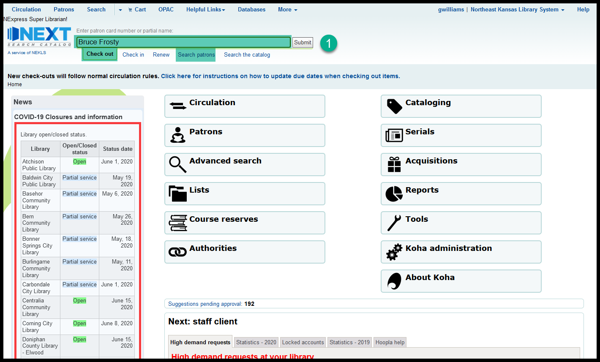
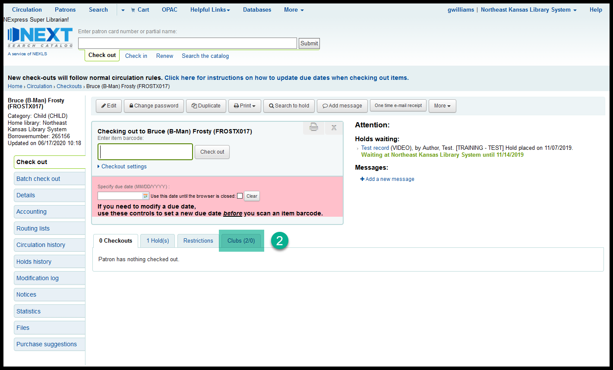
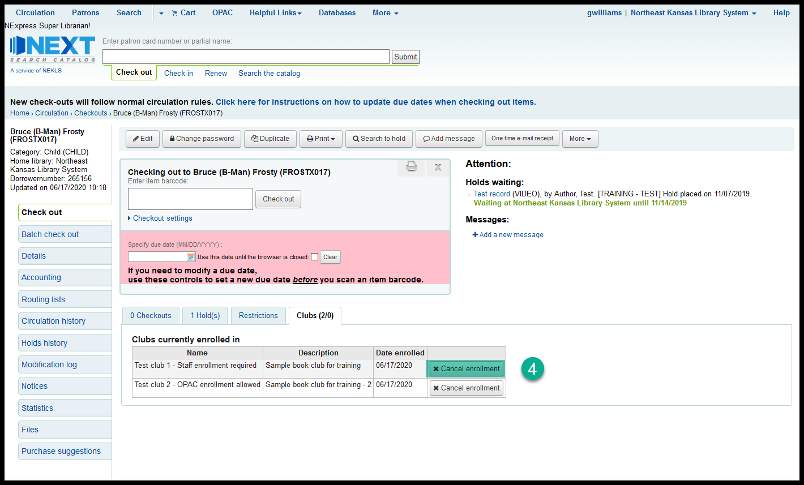
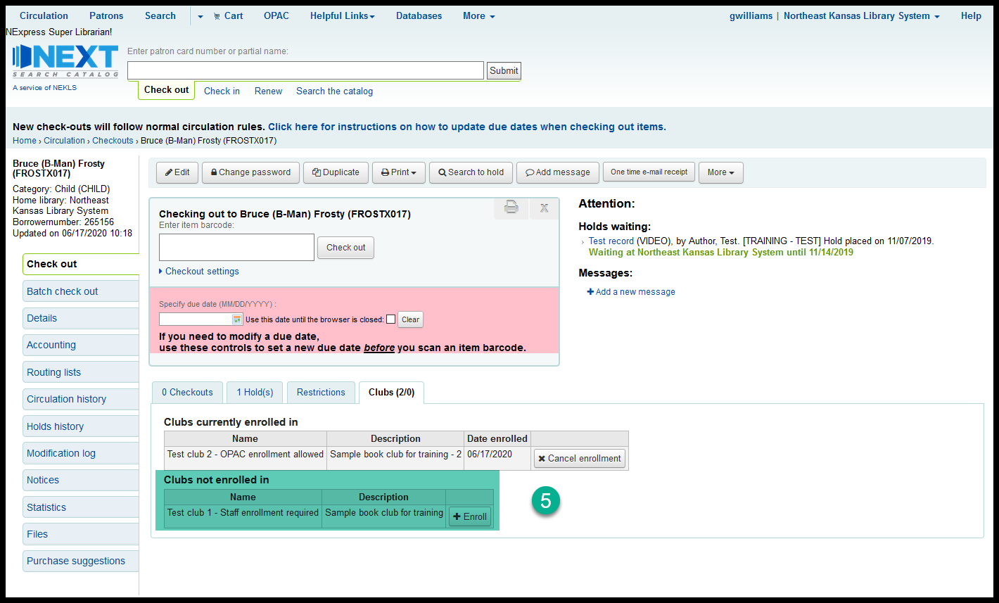
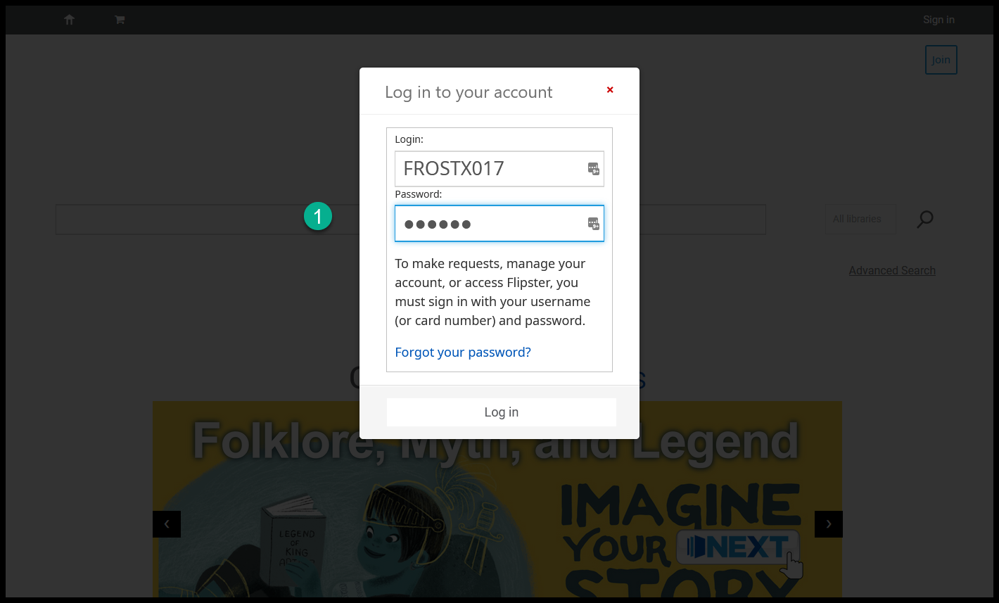
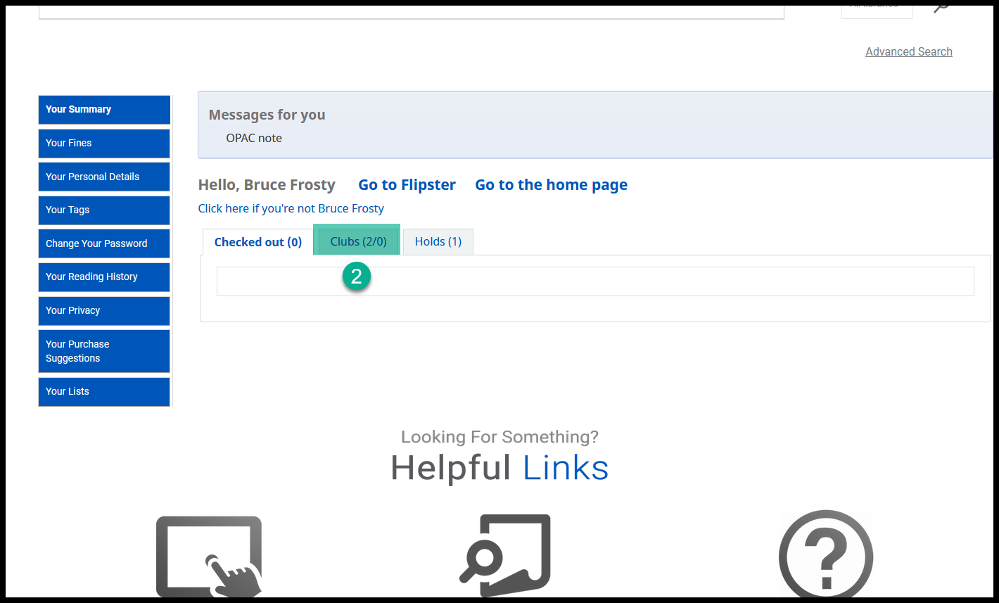
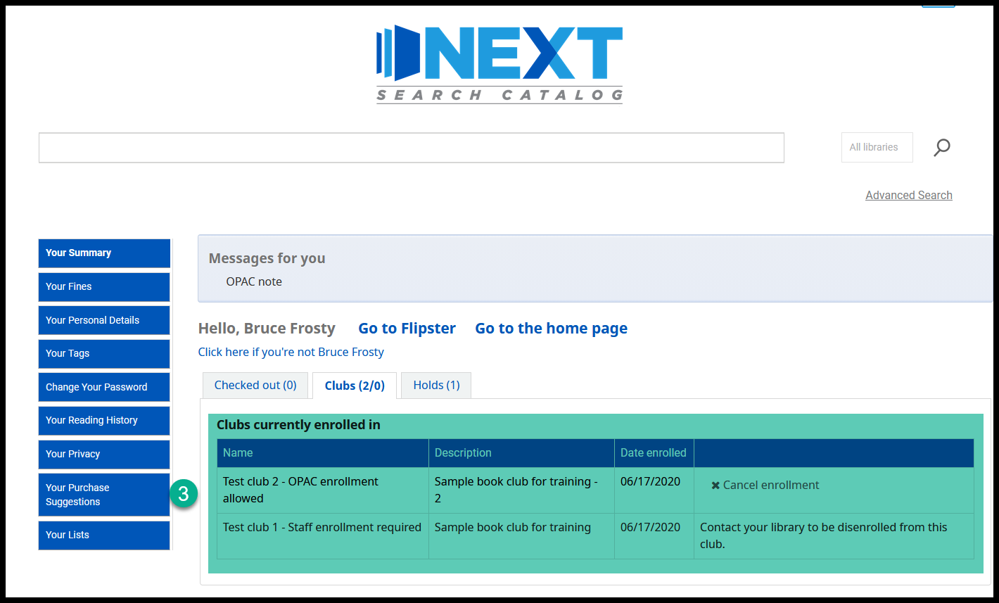
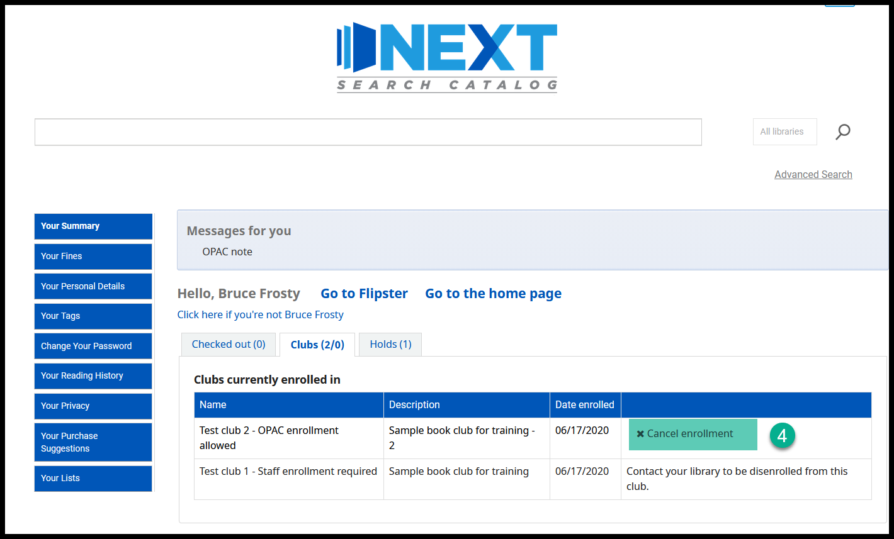
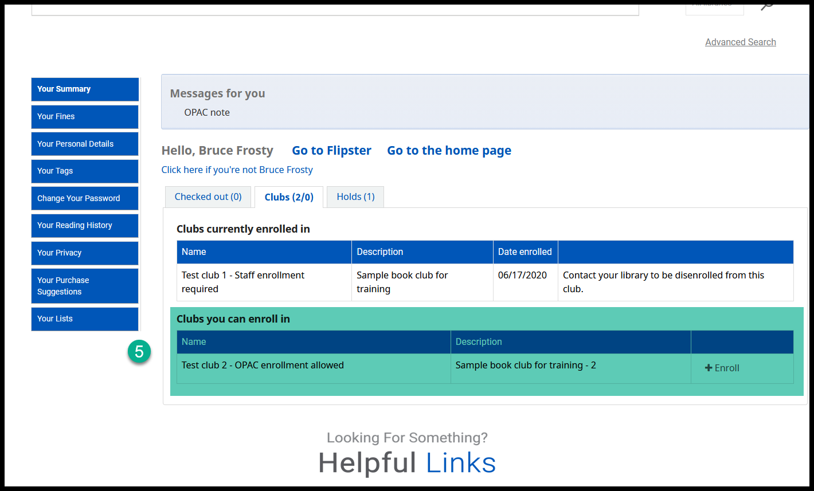
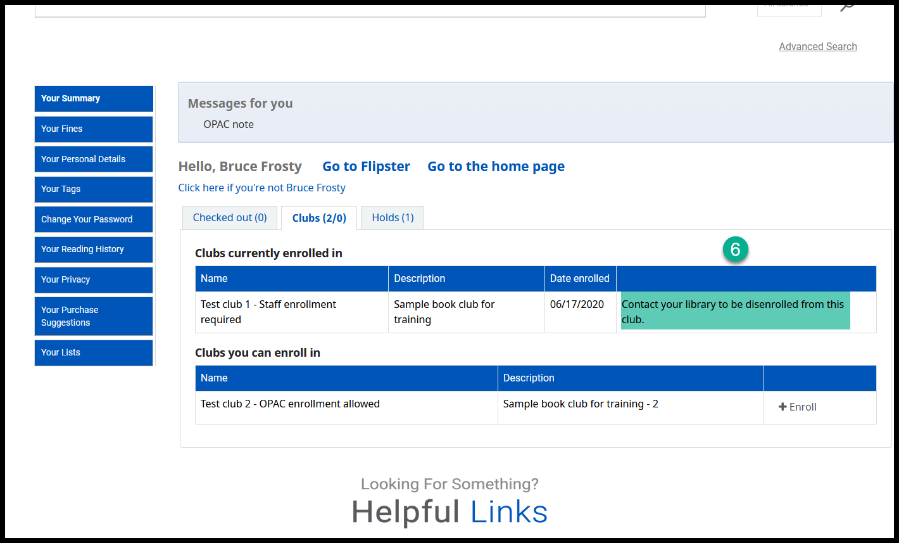

Leaving a club¶
Staff can remove a patron from any club¶
Look up a patron through the checkout or the patron search tool

If there are clubs available at your library, you’ll see a “Clubs” tab on the checkout and details pages

When you click on that tab, you’ll see a list of the clubs the patron is enrolled in at your library

Click on “Cancel enrollment” to remove that patron from the club

The club the patron has just left will now appear in the list of clubs not enrolled in

Patrons can remove themselves from any OPAC enrollment club¶
The patron logs into their account in the OPAC

If there are clubs available at the patron’s home library, on the “Your summary” page the patron will see a tab for “Clubs”

When the patron clicks on that tab they will see a list of clubs they are members of as well as any self-enrollment clubs availale at their home library

The patron neds to click on “Cancel enrollment” to leave a club

The club the patron has just left will now appear in the list of clubs not enrolled in

A patron will not be able to leave a club that is managed solely by library staff
